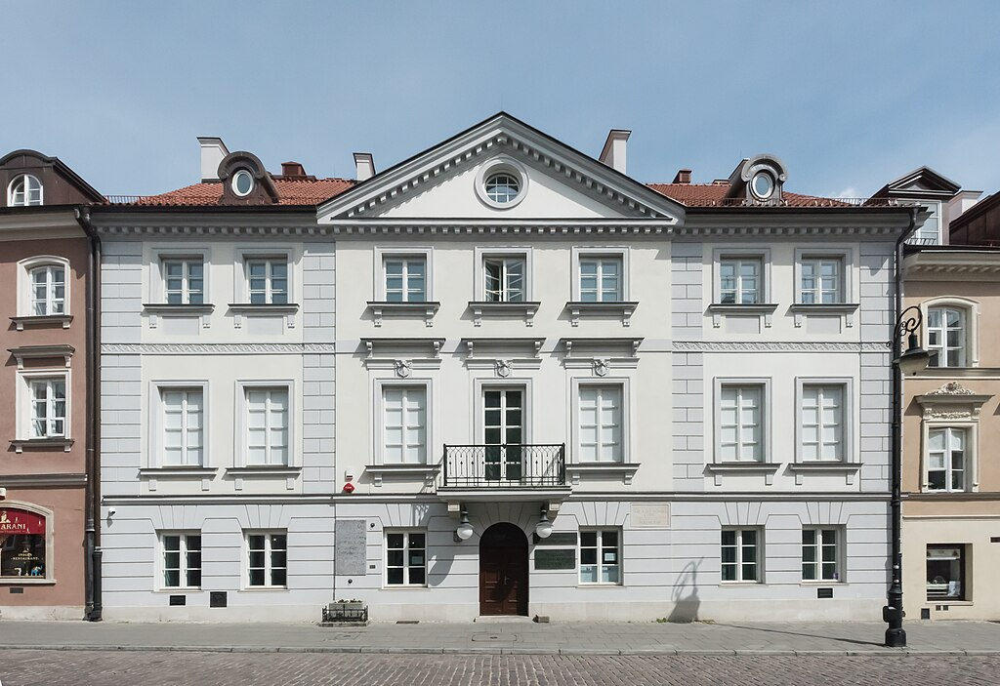

Museum
Maria Skłodowska-Curie was born at 16 Freta Street, where today you'll find a museum dedicated to her life and work. Your task is to visit this unique place, where you will not only learn about her scientific achievements but also delve into her personal life.
 How to get there?- Tram 35 or 15 from Wawelska 03 stop, get off at Ratusz Arsenał, and then a 10-minute walk down Długa Street.
- Alternatively: Bus 182, 187, or 523 from Wawelska 05, switch to the metro (direction Młociny), get off at Ratusz Arsenał, and then a 10-minute walk down Długa Street.
Trust Google Maps—it's your guide in this urban jungle.